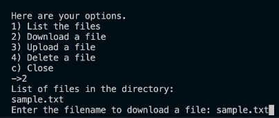

About This Project
This software is the first time I'm programming something to send data between two computers. This is an important first step for me, as communicating between computers is vital for almost all consumer software.
This software is a basic network file manager. The files are stored on the server side in the "files" folder. On the client side, you have two folders, "files" and "uploading". The "files" folder is where files that you download from the server go to, and "uploading" is where you can put files that you're going to upload to the server.
With both the client and server software, you'll simply run the python file in a terminal. As expected, you need to first start the server side, then the client side, so that the client is able to connect to the server. There isn't anything to do on the server side once you've started it, as it's only there to hold the files and manage them. On the client side, you'll be given options in the terminal for what action you want to perform next.
My purpose of writing this software was to introduce myself to network programming. I wanted to create a basic server and client, and learn how to manage that connection, and send data between the server and client.
Key Features
- Client-server architecture
- Data is sent in 4096 byte packets over a TCP connection
- Basic terminal interface
Technologies Used
- Python
- TCP
Links
Screenshots
Lessons Learned
I learned the basics of connecting two computers via a local wireless connection. I learned how TCP connections work, what the client-server architecture is, and how basic message encryption works.